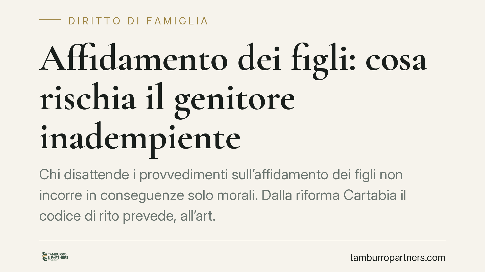

Affidamento dei figli: cosa rischia il genitore inadempiente
Chi disattende i provvedimenti sull'affidamento dei figli non incorre in conseguenze solo morali. Dalla riforma Cartabia il codice di rito prevede, all'art. 473-bis.39 c.p.c., una scala di rimedi che il giudice può graduare: dall'ammonizione alla condanna pecuniaria. Comprenderne presupposti e logica è decisivo per chi subisce l'inadempimento e per chi rischia di esserne accusato.

Il fatto: quando le regole sull'affidamento restano sulla carta
Accade di frequente. Un calendario di visite concordato o imposto dal giudice viene sistematicamente ignorato. Un genitore trattiene il figlio oltre i tempi stabiliti, ostacola i contatti con l'altro, oppure non comunica le decisioni rilevanti sulla vita del minore. La domanda che ci viene posta è sempre la stessa: cosa si rischia, in concreto?
La risposta oggi ha una sede normativa precisa. Con il D.Lgs. 149/2022 (riforma Cartabia) il legislatore ha concentrato nell'art. 473-bis.39 c.p.c. gli strumenti sanzionatori contro il genitore che viola gli obblighi relativi all'affidamento o gli altri provvedimenti adottati nell'interesse del minore.
Inquadramento normativo
Il punto di partenza resta l'art. 337-ter c.c., che afferma il principio di bigenitorialità: il minore ha diritto a mantenere un rapporto equilibrato e continuativo con entrambi i genitori. Le regole sull'affidamento non sono un favore a un genitore, ma la traduzione operativa di un diritto del figlio.
L'art. 473-bis.39 c.p.c. presidia quel diritto con quattro rimedi, utilizzabili anche cumulativamente dal giudice: l'ammonizione del genitore inadempiente; la condanna al risarcimento del danno in favore dell'altro genitore o del minore; il pagamento di una somma di denaro a titolo di coercizione indiretta (la cosiddetta *astreinte*); la condanna al pagamento di una sanzione amministrativa pecuniaria a favore della Cassa delle ammende, nella misura stabilita dalla norma.
Su questo punto è doveroso un chiarimento prudenziale: la forbice edittale va letta sulla lettera aggiornata della disposizione, che il difensore deve verificare caso per caso prima di quantificare qualsiasi importo. Riportare cifre a memoria, su una norma recente e passibile di modifiche, è un azzardo che evitiamo.
Astreinte e sanzione alla Cassa: due logiche diverse
Il punto più spesso frainteso riguarda la natura dei due rimedi pecuniari, che non vanno confusi.
L'*astreinte* è una misura coercitiva: la somma viene liquidata a favore dell'altro genitore e serve a spingere l'inadempiente a rispettare il provvedimento, colpendolo nel patrimonio per ogni violazione o per ogni ritardo. La sua funzione non è punire il passato, ma piegare la volontà verso l'adempimento futuro. Si collega sistematicamente all'art. 614-bis c.p.c., la misura di coercizione indiretta pensata proprio per gli obblighi di fare infungibili — e portare il figlio dall'altro genitore è l'esempio tipico di prestazione che nessuno può eseguire al posto dell'obbligato.
La sanzione a favore della Cassa delle ammende ha invece natura afflittiva: è una pena pecuniaria che sanziona la condotta in sé, non confluisce nel patrimonio dell'altro genitore e risponde a una logica pubblicistica di tutela della funzione giurisdizionale.
Poiché le due misure rispondono a finalità distinte, possono sommarsi. Lo stesso vale per il risarcimento del danno, che presuppone un pregiudizio concreto e provato, distinto dalla mera violazione formale.
I presupposti applicativi
Nessun automatismo. Il giudice dispone di ampia discrezionalità nella scelta e nel dosaggio dei rimedi, e questa discrezionalità si esercita su alcuni parametri.
Rileva anzitutto la gravità dell'inadempimento: un singolo ritardo isolato non pesa come un'ostruzione sistematica dei rapporti. Rileva la reiterazione: la condotta ripetuta giustifica le misure più incisive. Rileva, infine, l'elemento soggettivo: va distinta la violazione deliberata e strumentale da quella determinata da cause oggettive o dalla volontà del minore adolescente, che il giudice valuta con attenzione.
Il criterio ultimo resta l'interesse del minore. Non a caso, nei procedimenti più delicati, può essere nominato un curatore del minore, figura che la riforma ha rafforzato per dare voce autonoma al figlio quando i suoi interessi confliggono con quelli dei genitori.
Implicazioni pratiche
Per chi subisce l'inadempimento, lo scenario è più favorevole che in passato: esiste una gamma di strumenti rapidi, attivabili nello stesso procedimento, senza dover necessariamente avviare un giudizio autonomo.
Per chi viene accusato di inadempienza, il rischio è reale ma non automatico: la difesa si gioca sulla prova delle ragioni della condotta e sulla dimostrazione che non vi è stata volontà di sottrarsi.
Cosa fare in concreto
- Documentate ogni violazione in modo oggettivo: messaggi, email, orari di consegna mancati, testimonianze. La prova scritta vale più del racconto.
- Evitate reazioni speculari: sospendere il mantenimento o trattenere il figlio per ritorsione espone a sua volta a sanzioni e indebolisce la vostra posizione.
- Formulate un'istanza mirata, indicando al giudice quale rimedio chiedete e perché è proporzionato alla condotta contestata.
- Agite con tempestività: la reiterazione documentata rafforza la richiesta, ma attendere troppo può far apparire tollerata la violazione.
La scelta dello strumento processuale va calibrata sul caso concreto e sulla documentazione disponibile.
---
Contributo informativo a cura di Tamburro & Partners Avvocati. Non costituisce parere legale.
Ogni famiglia ha il suo equilibrio.
Separazione, divorzio, affidamento, assegno: se vuoi un confronto riservato su una specifica situazione, scrivi allo studio. Ti rispondiamo entro un giorno lavorativo.